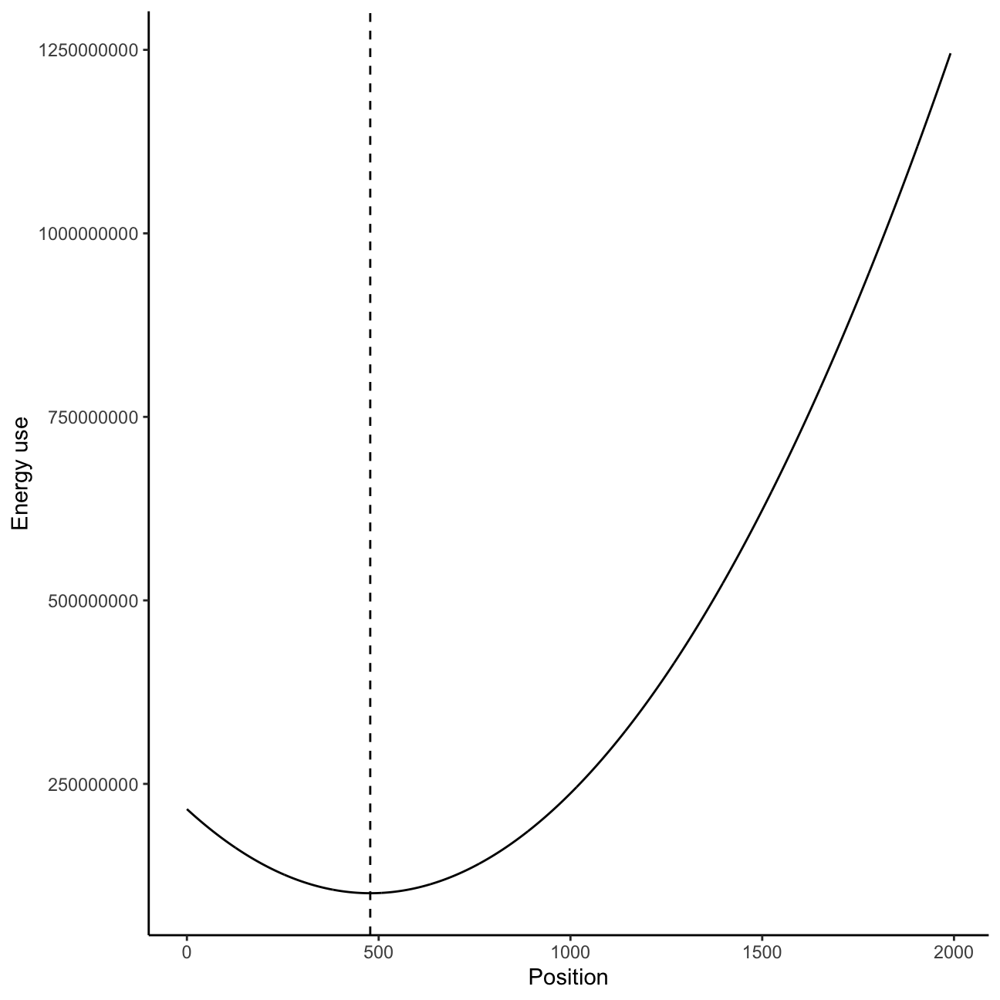

For Day 7 we move from fish to crabs, that are supposedly using submarines 🤷. I did not come up with the context for this! Either way, we are given a vector of (1-dimensional) positions for each crab and need to identify the position where all crabs can meet that involves the smallest amount of movement. Technically, this challenge isn’t too hard so we can spend a bit of time comparing two approaches.
For the first challenge we assume that movement costs increase linearly with distance (i.e. moving 1 positions costs 1 ‘energy’, moving 10 positions costs 10 ‘energy’). We’ll compare the amount of energy expended to reach locations ranging from position 0 until 1991 (the furthest position in our data):
(possible_positions <-range(day7_data))
[1] 0 1991
Because costs of movement are linear, the amount of energy used to move to any position is just the distance covered.
energy_use <-NULLfor (i in possible_positions[1]:possible_positions[2]) { energy_use <-append(energy_use, sum(abs(day7_data - i)))}
What is the minimum amount of energy used?
min(energy_use)
[1] 351901
Challenge 2
For our second puzzle, we assume that energy use increases non-linearly with distance, such that the energy used is the sum of the sequence of distances traveled (i.e. moving 3 positions will use 1 + 2 + 3 = 6 energy). Luckily, there is an easy mathematical solve to determine the sum of any arithmetic sequence (i.e. a sequence that increases at a constant rate):
\[S_{n} = n(a_{1} + a_{n})/2\]
Where \(n\) is the length of the sequence, \(a_{1}\) is the first value of the sequence, and \(a_{n}\) is the last term in the sequence. We can make this into a function for easy use.
#Sum of values in a sequence#Source: https://www.varsitytutors.com/hotmath/hotmath_help/topics/sum-of-the-first-n-terms-of-an-arithmetic-sequencesum_seq <-function(start, end, n){ (n*(start + end))/2}
Now we can apply the for loop approach from before to find the minimum energy use under this non-linear energy use assumption.
energy_use2 <-NULLfor (i in possible_positions[1]:possible_positions[2]) { diffs <-abs(day7_data - i) energy_use2 <-append(energy_use2, sum(sum_seq(start =1, end = diffs, n = diffs)))}min(energy_use2)
[1] 101079875
BONUS ROUND
So this was all fairly easy it seems, but was this the most efficient method we could use? If we look at the energy use values we’ve calculated we can see that there is a clear ‘trough’ where minimum energy use is found. This is exactly the type of problem that we could solve with an optimization algorithm!
library(ggplot2)ggplot()+geom_line(aes(x =0:1991, y = energy_use2)) +#Need to subtract one to index of min energy use because R starts index at 1geom_vline(xintercept =which(energy_use2 ==min(energy_use2)) -1, lty =2) +labs(x ="Position", y ="Energy use") +theme_classic()

Because we are only optimizing a single variable, we only need to use a one-dimensional optimizer. To use an optimizer, we first need to create a function that will return the value we want to minimize. This is simply a re-work of the for loop we used above.
#Create function to optimizeoptim_func <-function(i){ diffs <-abs(day7_data - i)sum(sum_seq(start =1, end = diffs, n = diffs))}
Now we can feed this function into the optimizer using the optim() function in R. There are many possible optimization algorithms that exist, but in R the ‘Brent’ optimizer is the default algorithm designed for one-dimensional problems.
optimal_energy <-optim(par =1000, #Specify the value where the optimizer will start searchingfn = optim_func, #Specify the function that will be usedlower =0,upper = possible_positions[2], #Specify the upper and lower values of the search spacemethod ="Brent"#Specify the algorithm used)min(energy_use2) == optimal_energy$value
[1] FALSE
optimal_energy$value
[1] 101079758
Our optimizer returns…a smaller minimum energy use than with our previous method?! How is this possible? Well, while our challenge only considered integer distances the optimizer has no such constraint! We can see the difference between the best (continuous) position from the optimizer and the best (categorical) position from our previous method below.
optimal_energy$par
[1] 478.484
which(energy_use2 ==min(energy_use2)) -1
[1] 478
To demonstrate how we could get the exact same result we can constrain our distances to be integers using round().
#Try doing it using an optimization algorithmoptim_func_int <-function(i){ diffs <-abs(day7_data -round(i))sum(sum_seq(start =1, end = diffs, n = diffs))}optimal_energy_int <-optim(par =1000, #Specify the value where the optimizer will start searchingfn = optim_func_int, #Specify the function that will be usedlower =0,upper = possible_positions[2], #Specify the upper and lower values of the search spacemethod ="Brent"#Specify the algorithm used)optimal_energy_int$value
[1] 101079875
So we can now see how an optimizer could be used to solve this problem, but is it actually any better? We can do some bench marking on these methods the same way we did on Day 1. In our original for loop method we necessarily have to calculate the energy use for every possible (integer) distance. In our optimization method, we only need to calculate energy use until the algorithm determines that we have reached a minima (although we cannot be certain this will be the global minimum).
After benchmarking we can see that the optimization function is substantially faster than our for loop method. Orders of magnitude faster even! In our rough bootstrap below we are able to run over 1,000 times more iterations of our optimizer per second than our for loop approach. Although for loops are often useful and powerful, in cases like this an optimizer provides a much more efficient alternative.
library(bench)#set seed so we achieve the same outcomesset.seed(123)times <-mark(old = {for (i in possible_positions[1]:2000) { diffs <-abs(day7_data - i) energy_use2 <-append(energy_use2, sum(sum_seq(start =1, end = diffs, n = diffs)))}},new =optim(par =1000, #Specify the value where the optimizer will start searchingfn = optim_func_int, #Specify the function that will be usedlower =0,upper =2000, #Specify the upper and lower values of the search spacemethod ="Brent"#Specify the algorithm used), check =FALSE, iterations =50)#How many more iterations per second does our optimizer achieve?times$`itr/sec`[2]/times$`itr/sec`[1]